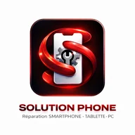

Honor & Huawei (Magic5/6/7 Lite, X6/X7/X8, Honor 90/200)
Spécialiste des écrans incurvés Honor Magic Lite et des dalles LCD série X : pose soignée sur châssis neuf ou recollé et protection Hydrogel anti-choc posée sur les courbes.

03 85 33 06 89Écran incurvé Honor Magic cassé, batterie Oppo Reno ou OnePlus affaiblie, connecteur de charge Motorola ou Nothing Phone endommagé : nous réparons toutes les marques Android au 21 rue Gambetta.

Spécialiste des écrans incurvés Honor Magic Lite et des dalles LCD série X : pose soignée sur châssis neuf ou recollé et protection Hydrogel anti-choc posée sur les courbes.
Remplacement d’écran AMOLED, batterie compatible charge rapide SuperVOOC / Warp Charge, connecteur USB-C et nappe bouton.
Séries Moto G / Moto Edge, Nothing Phone (1)/(2)/(2a) et téléphones durcis professionnels : diagnostic gratuit et tarif ferme annoncé avant toute ouverture.
Envoyez une capture de Paramètres → À propos de l’appareil sur WhatsApp : nous confirmons le stock ou réservons la pièce gratuitement avant votre venue.
Oui, nous remplaçons les dalles incurvées AMOLED des Honor Magic5 Lite, Magic6 Lite, Honor 90 et Honor 200 (en version Compatible OLED ou bloc Original constructeur avec châssis), et nous posons ensuite un film Hydrogel sur mesure adapté aux bords courbés.
Oui, toutes ces marques de smartphones hors garantie sont éligibles au Bonus Réparation QualiRépar de 25 € déduit immédiatement en boutique chez Solution Phone à Mâcon.
Si votre référence n’est pas immédiatement en tiroir à Mâcon, nos fournisseurs express livrent l’atelier en 24 à 48h ouvrées : vous gardez votre téléphone avec vous jusqu’à l’arrivée de la pièce.